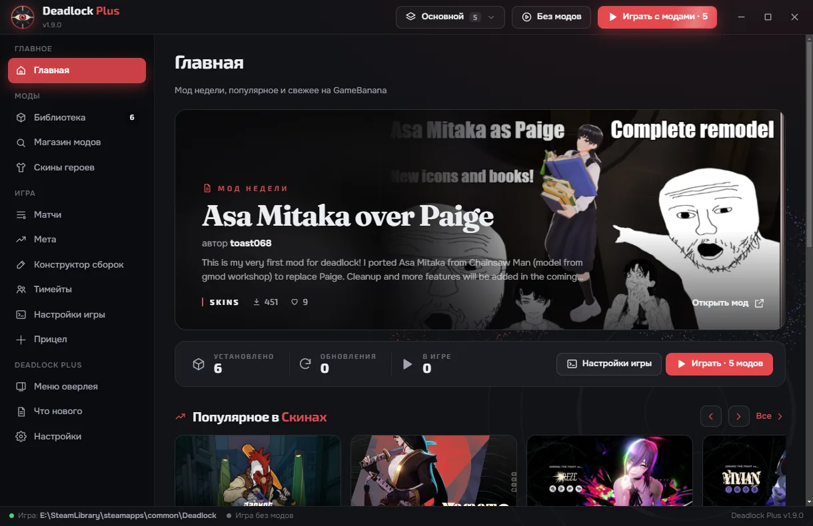

Оверлей для Deadlock: подсказывает, что и когда покупать, ставит моды с GameBanana и разбирает сыгранные матчи. На вопросы об игре отвечает AI-тренер — текстом или голосом.

Окно поверх игры в режиме «Без рамки». Открывается клавишей Insert или кликом по значку в углу экрана.
Нажимай на пункты меню на скриншоте или на вкладки.
Работают прямо на сайте, устанавливать ничего не нужно.
Вставь в консоль игры (~). В Deadlock Plus прицел меняется кнопкой и сохраняется в настройках игры.
Положи файл в папку Deadlock/game/citadel/cfg. В Deadlock Plus те же настройки — переключателями.
Не нашёл ответ? Напиши в Issues на GitHub.
Deadlock Plus не читает память игры и ничего не внедряет в её процесс — это отдельное окно поверх игры. Статистика берётся из публичного deadlock-api. Моды меняют только внешний вид, как разрешает Valve, и видны только тебе.
Так SmartScreen реагирует на новые программы без платной подписи. Нажми «Подробнее» → «Выполнить в любом случае». Предупреждение не значит, что файл опасен.
Открой «Магазин модов», нажми «Установить» и запусти игру кнопкой «Играть с модами». Лаунчер сам положит файлы в нужную папку и подключит их.
Нажми «Без модов» в шапке лаунчера — игра запустится чистой. Или «Настройки → Вернуть игру как было»: моды уйдут из папки игры, библиотека останется.
Обновление может вернуть файлы игры. Лаунчер это заметит и покажет полосу «Моды перестали загружаться» с кнопкой «Вернуть моды».
Да, свой ключ Claude API — он хранится зашифрованным на твоём компьютере. Всё остальное работает без ключа.
Матчи берутся из deadlock-api — там они появляются после игр. Если ты играешь с другого аккаунта Steam, укажи его ID в разделе «Матчи».
Установщик для Windows 10 и 11, около 80 МБ. Новые версии ставятся поверх старой — моды и настройки сохраняются.